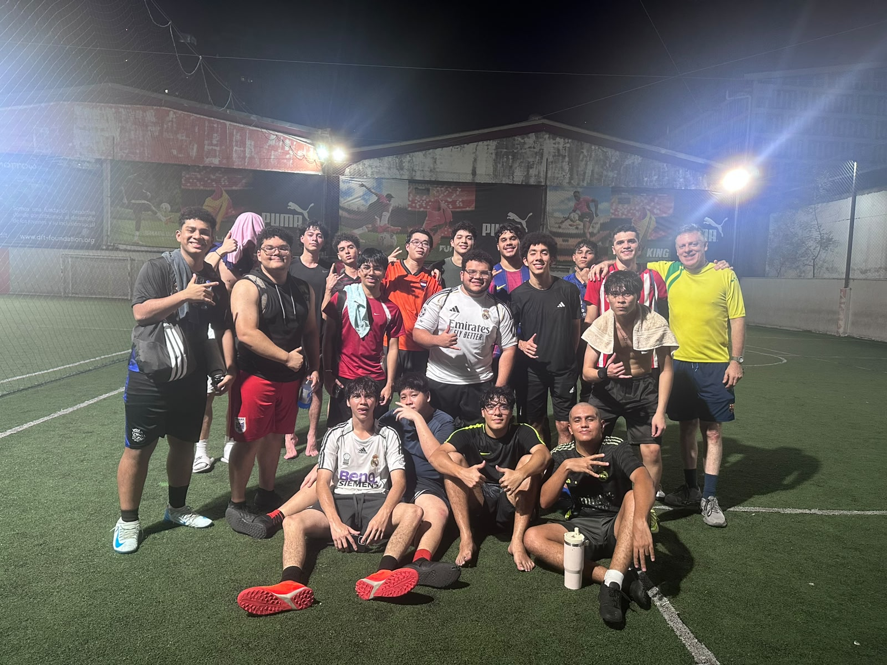
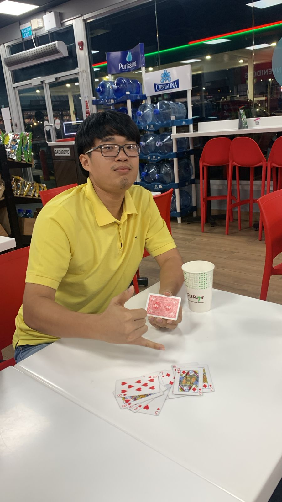

Presentación Personal
Mi nombre completo es Alexis He Zheng, nací el 22 de enero del 2006 por ende tengo 20 años en la actualidad. Me gradué del Instituto Episcopal San Cristóbal en bachiller de ciencias y letras.
Formación e Intereses Académicos
- Carrera: Licenciatura en Ingeniería de Software.
- Áreas de interés: Desarrollo de páginas web.
- Tecnologías que me interesan: HTML, CSS, JavaScript.
- Temas por aprender: Lógica de bases de datos y seguridad web.
Hobbies e Intereses Personales
Fuera de los estudios y proyectos académicos, disfruto mucho realizar las siguientes actividades:
- Primer Hobbie: Jugar fútbol con los amigos.
- Segundo Hobbie: Jugar tenis de mesa con amigos.
- Tercer Hobbie: Jugar cartas o dominos con los amigos.
Metas o Intereses Futuros
Mi meta principal es culminar exitosamente este semestre, pasar la materia de Ingeniería Web y en el futuro cercano trabajar creando aplicaciones prácticas en el mercado de Panamá. Y capaz más adelante estudiar una carrera de la facultad de eléctrica.
Elementos Visuales

